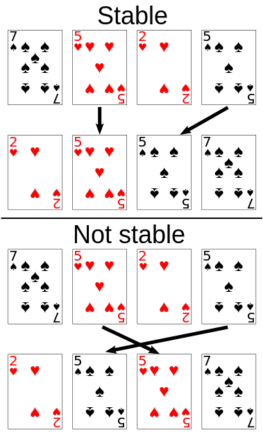

 When sorting some kinds of data, only part of the data is examined when determining the sort order. For example, in the card sorting example to the right, the cards are being sorted by their rank, and their suit is being ignored. This allows the possibility of multiple different correctly sorted versions of the original list. Stable sorting algorithms choose one of these, according to the following rule: if two items compare as equal, like the two 5 cards, then their relative order will be preserved, so that if one came before the other in the input, it will also come before the other in the output.
More formally, the data being sorted can be represented as a record or tuple of values, and the part of the data that is used for sorting is called the key. In the card example, cards are represented as a record (rank, suit), and the key is the rank. A sorting algorithm is stable if whenever there are two records R and S with the same key, and R appears before S in the original list, then R will always appear before S the sorted list.
When equal elements are indistinguishable, such as with integers, or more generally, any data where the entire element is the key, stability is not an issue. Stability is also not an issue if all keys are different.
Unstable sorting algorithms can be specially implemented to be stable. One way of doing this is to artificially extend the key comparison, so that comparisons between two objects with otherwise equal keys are decided using the order of the entries in the original input list as a tie-breaker. Remembering this order, however, may require additional time and space.
One application for stable sorting algorithms is sorting a list using a primary and secondary key. For example, suppose we wish to sort a hand of cards such that the suits are in the order clubs (♣), diamonds (♦), hearts (♥), spades (♠), and within each suit, the cards are sorted by rank. This can be done by first sorting the cards by rank (using any sort), and then doing a stable sort by suit:
Within each suit, the stable sort preserves the ordering by rank that was already done. This idea can be extended to any number of keys, and is leveraged by radix sort. The same effect can be achieved with an unstable sort by using a lexicographic key comparison, which, e.g., compares first by suit, and then compares by rank if the suits are the same.